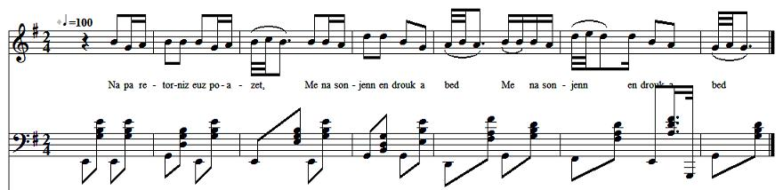

Izabell Ar Yann
Isabelle Le Jean - Isabel Johns
à rapprocher avec "le Baron de Jauioz" du "Barzhaz Breizh"
Texte recueilli par François-Marie Luzel
Publié dans "Gwerzioù Breiz Izel" Tome II, page 30, en 1874
Chanté par Marguerite Philippe de la paroisse de Pluzunet (Côte du Nord) le 1er octobre 1868

Mélodie
"En dud yeuank de Valardi"
Paroisse Bretonne de Paris, Janvier 1929
Luzel ne donne aucune mélodie. Celle-ci est donnée à titre d'illustration.
Arrangement Christian Souchon (c) 2013
|
VERSION "GWERZIOU" I. 1. Na pa retorniz euz poazet, Me na sonjenn en drouk a bed; 2. Na pa retorniz euz poazet, Pewar lakes 'm euz rankontret; 3. Pewar lakes hag ur jouiz [1] Oa'n tall ar groaz, pa dremeniz. 4. Hag ar jouiz 'c'houll ouz in-me : — Merc'h iaouank, c'hui a zimezfe? 5. Merc'h iaouank, c'hui a zimezfe Da genta mab ho goulenfe? 6. Da genta mab ho goulenfe, Ha ve posubl ve me a ve? 7. — Na eo ket war ar c'hroaz hentjou. Aotro, ve gret ann dimiziou, 8. Met en iliz, pe er porchet Etre daou den hag ur bêlek. II. 9. Isabell ar Iann a lare, Er ger, d'hi mamm, pa arrue : 10. — Ma mammik paour, mar am c'haret, Ma miret euz ar jouisted, 11. Ma miret euz ar jouisted Ma laket 'n ur gambr alc'houezet. — 12. Ar jouiz braz a vonjoure, 'N ti ar Iann koz pa arrue : 13. — Demad a joa holl en ti ma. Izabell'r Iann pelec'h ema? — 14. — Et e Izabell da boazet Ha na medi ket retornet. 15. — Roet c'hui d'in ann alc'houezou Ewit ma sellinn er c'hambrjou. — 16. Dor ar gambr wenn 'n euz digoret Izabell ar Iann n'euz kavet. 17. Izabell ar Iann 'c'houlenne Euz hi mammik paour ann de se : 18. — Ma mammik paour d'in-me laret, Gant ar jouiz red vo monet? 19. — Se d'ac'h ma merc'h na larinn ket Digant ho tad a c'houlenfet. 20. — Ma zadik paour, din me laret, Gant ar jouiz red' vo monet? 21. — Se d'ac'h ma merc'h na larinn ket, Digant ho preur Louiz goulennet, 22. — Lares-te d'in, ma breur Louiz Ha red' vo monet gant ar jouiz? 23. — la, gant ar jouiz 'vo red monet, Pa'z eo ar paeamant touchet; 24. Pewar c'hant skoed en arc'hant mad JS'euz touchet ho mamm hag ho tad, 25. Ha kement all ho preur Louiz Wit laret ho rei d'ar jouiz; 26. Ha mar et c'hui a galon vad Me am bo c'hoaz un dra hennag. 27. — ?? a teuz bet, pe na t euz ket. Gant ma grád vad me na inn ket. III. 28. Izabell ar Iann a lare D'hi mammik paour, un dez a oë : 29. — Ma mammik paour, Jaret c'hui d'inn Na pe seurt habit a wiskinn? 30. — Guiskit ho habit violet, A vezo skanv d'ac'h da gerzet. 31. — Gwisko ann habit a garo Kammed war droad hi na raio; 32. 'Ma ma inkane n 'toull ar porz, Izabell ar Iann, euz ho kortoz, 33. G'houarnet mad gant leton gwenn Hag ur brid arc'hant en he benn; 34. Hag ur brid arc'hant en he benn, He bommello en aour melenn. 35. — Mar'zo 'r brid arc'hant en he benn He bommello en aour melenn, 36. He bommello en aour melenn, Me garrie' ve'n tan en he benn! 37. Ha koulsgoude am euz pec'het, Rag al loen paour n'eo ket kiriek.— 38. Isabell ar Iann a lare A borz hi zad pa bartie : 39. — Adieu, ma mamm, adieu ma zad; Biken n'ho kwel ma daoulagad! 40. Me lar adieu d'am holl broiz Met dhennont, al laer, ma breur Louiz, 41. Met dhennont, al laer, ma breur Louiz, Hen euz ma goerzet d'ar jouiz! — IV. 42. Isabell ar Iann c'houlenne Euz ar jouiz braz, un dez a oe : 43. — Jouiz, jouiz, d'in me laret N'eo ket heman'r pont 'm euz klewet 44. N'eo ket heman'r pont 'm euz klewet 'Taoulinn war-n-ezhan al loened? — 45. N'oa ket hi gir peur lavaret, Hi marc'h 'dann hi' zo daoulinet. V. 46. Izabell ar Iann a lare D'ar jouiz braz, un dez a oe : 47. — Me glew kog ma zad o kanan ! — N'ret ket, Izabell, eme-z-han ; 48. N'ret ket, Izabell, eme-z-han ; Rag pemp kant lew oc'h diout-han. VI. 49. Ar jouiz braz a lavare Er ger d'he vamm pa arrue : 50. — Na setu ur verc'h kaer aman, Braoa plac'h iaouank eo houman! 51. — Na eo ket deut gant hi grád vad: Ema'n dour war hi daoulagad. — 52. Ar jouiz braz a lavare D'lzabell ar Iann, un dez a oe : 53. — Deut gan-in Izabell d'ar sellier Da danva gwinn ken dous ha mel. 54. — Gwell ve gan-in, en ti ma zad, Eva dour euz feunteunn ar prad. 55. — Deut gan-in, Izabell, d'am c'hambrjou Da gonta aour a dousennou. 56. Deut gan-in, Izabell, d'ar gambr wenn Da gonta aour hag arc'hant gwenn. 57. — Gwell gan-in beza' n ti ma zad, Konta uiou da gass d'ar marc'had. 58. Ar jouiz braz a lavare Na dhe vammik un dez a oe : 59. — N'ouzon petra ober out hi : Kalz a boan-spered a ro din; 60. Goulennann 'r mennad a garann, Bepred na ra nemet goelan. 61. — Mar n'ouzoud da ober out-hi Kommer ur gontel ha laz hi. 62. — Tri marc'h zo er marc'hosi, Daou a zo d'ac'h hag unan din, 63. Daou a zo d'ac'h hag unan din, Rag evit hounnes na lazinn ! — [2] VII 64. Nag a-benn un nao miz goude Izabell kontantament doe; 65. Oa Izabell e tall an tan O toman ur jouiz bihan. .... 66. — Evnidigou diwar ann nij, Grit ma gourc'hemeno en Breiz, 67. Grit ma gourc'hemeno d'am broi'z, Met d'hennont, al laer, ma breur Louiz, 68. Met d'hennont, al laer, ma breur Louiz, Hen euz ma goerzet d'ar jouiz. [3] Kanet gant Marc'harit FULUP a barrez Plunet (Kosteioù an Hanter-Noz) d'ar c'hentañ a viz Here 1868. |
TRADUCTION FRANCAISE I 1. Quand je revins de faire cuire (au four banal). Je ne songeais pas à mal ; 2. Quand je revins de faire cuire, Je rencontrai quatre laquais ; 3. Quatre laquais et un juif [1] Étaient auprès de la croix quand je passai. 4. Et le juif me demanda : — Jeune fille, vous fianceriez-vous ? 5. Jeune fille, vous fianceriez-vous Avec le premier garçon qui vous demanderait ? 6. Avec le premier garçon qui vous demanderait, Et quand il serait possible que ce fut moi ? 7. — Ce n’est pas dans les carrefours, Seigneur, que se font les fiançailles, 8. Mais dans l’église, ou dans le porche, Entre deux personnes et un prêtre. II 9. Isabelle Le Jean disait A sa mère, en arrivant à la maison : 10. — Ma pauvre petite mère, si vous m’aimez, Préservez-moi des juifs ;(litt. de la juiverie) 11. Préservez-moi des juifs, Mettez-moi dans une chambre fermée à clef. 12. Le grand juif souhaitait le bonjour En arrivant dans la maison du vieux Le Jean : 13. — Bonjour et joie à tous dans cette maison, Isabelle Le Jean où est-elle ? 14. — Isabelle est allée faire cuire, Et elle n’est pas revenue. 15. — Donnez-moi les clefs, Afin que je regarde dans les chambres. 16. Il a ouvert la porte de la chambre blanche, Il a trouvé Isabelle Le Jean.... 17. Isabelle Le Jean demandait A sa pauvre petite mère, ce jour là : 18. — Ma pauvre petite mère, dites-moi, Avec le juif faudra-t-il aller ? 19. — Cela, ma fille, je ne vous dirai pas, A votre père vous le demanderez. 20. — Mon pauvre petit père, dites-moi, Avec le juif faudra-t-il aller ? 21. — Cela, ma fille, je ne vous dirai pas, A votre frère Louis demandez-le. 22. — Dis-moi, toi, mon frère Louis, Faudra-t-il aller avec le juif ? 23. — Oui, il faudra aller avec le juif, Puisque le prix est touché ; 24. Quatre cents écus, en bon argent, Ont reçu votre mère et votre père. 25. Et autant (en a eu) votre frère Louis, Pour promettre de vous donner au juif ; 26. Et si vous allez de bon cœur, J’aurai encore quelque chose. 27. — Que tu aies eu ou que tu n’aies pas eu, Ce ne sera pas de bon gré que j’irai. III 28. Isabelle Le Jean disait A sa pauvre petite mère, un jour : 29. — Ma pauvre petite mère, dites-moi, Quelle robe mettrai-je ? 30. — Mettez votre robe violette, Qui vous sera légère pour marcher. 31. — Qu’elle mette la robe qu’elle voudra, Elle ne fera point un pas à pied ; 32. Ma haquenée est à la porte de la cour, Isabelle Le Jean, qui vous attend ; 33. Bien ferrée de laiton blanc, Et une bride d’argent à sa tête ; 34. Et une bride d’argent à sa tête ; Les pommeaux sont d’or jaune. 35. — Si elle a une bride d’argent en tête, Avec des pommeaux d’or jaune ; 36. Avec des pommeaux d’or jaune, Je voudrais qu’elle eût le feu dans la tête ! 37. Et pourtant c’est péché à moi, Car la pauvre bête n’est pas cause. 38. Isabelle le Jean disait, En sortant de la cour de son père : 39. — Adieu, ma mère, adieu, mon père, Jamais ne vous reverront mes yeux ! 40. Je dis adieu à tous ceux de mon pays, Sauf à celui-là, sauf à mon frère Louis, le voleur ; 41. Sauf à celui-là, mon frère Louis, le voleur, Qui m’a vendue au Juif ! IV 42. Isabelle le Jean demandait Au grand Juif, un jour : — 43. — Juif, Juif, dites-moi. N’est-ce pas celui-ci le pont dont j’ai entendu dire ; 44. N’est-ce pas celui-ci le pont dont j’ai entendu dire Que les bêtes s’agenouillent dessus ? 45. Elle n’avait pas achevé ces mots, Que sous elle son cheval s’est agenouillé. V 46. Isabelle le Jean disait Au grand Juif, un jour : 47. — J’entends le coq de mon père chanter ! — Vous ne l’entendez pas, Isabelle, dit-il ; 48. Vous ne l’entendez pas, Isabelle, dit-il, Car vous êtes à cinq cents lieues de lui. VI 49. Le grand Juif disait A sa mère, en arrivant à la maison : 50. — Voici une bru (que je vous amène) ; Quelle jolie jeune fille est celle-ci ! 51. — Elle n’est pas venue de son bon gré, Elle a des larmes dans les yeux. 52. Le grand Juif disait A Isabelle le Jean, un jour : 53. — Venez avec moi, Isabelle, au cellier, Pour goûter du vin aussi doux que le miel : 54. — J’aimerais mieux, dans la maison de mon père, Boire de l’eau de la fontaine du pré. 55. — Venez avec moi, Isabelle, dans mes chambres, Pour compter de l’or à la douzaine ; 56. Venez avec moi, Isabelle, à la chambre blanche, Pour compter de l’or et de l’argent blanc. 57. — J’aimerais mieux être dans la maison de mon père, A compter des œufs pour les porter au marché. 58. Le grand Juif disait A sa petite mère, un jour : 59. — Je ne sais que faire d’elle. Elle me donne beaucoup d’inquiétude ; 60. Quelque demande que je lui fasse, Toujours elle ne fait que pleurer. 61. — Si tu ne sais que faire d’elle, Prends un couteau et tue-la. 62. — Il y a trois chevaux dans l’écurie, Deux sont à vous, un est à moi ; 63. Deux sont à vous, un est à moi, Car quant à elle, je ne la tuerai point [2]. VII. 64. Et au bout de neuf mois après, Isabelle eut du contentement : 65. Isabelle était auprès du feu, Chauffant un petit juif... . . . . . . . . . . . . . . . . . . . . 66. Petits oiseaux qui volez, Faites mes compliments en Bretagne ; 67. Faites mes compliments aux gens de mon pays, Sauf à celui-là, mon frère Louis, le voleur ; 68. Sauf à celui-là, mon frère Louis, le voleur, Qui m’a vendue au Juif ! — [3] 1] Je n’ignore pas que la mot breton ordinaire pour rendra le mot Juif est INDEW, pluriel INDEWIEN ; mais ma chanteuse m’ayant affirmé qu’elle avait toujours entendu dire que le JOUIZ de son gwerz signifiait Juif, je reproduis fidèlement son opinion : la critique jugera ce qu’elle peut avoir de fondé. Dans une leçon recueillie à Ploëgat-Guerrand par O. Le Jean, le voyageur géographe, on trouve SOUIZ an lieu de JOUIZ, et je pense qu’il faut, alors, traduire par SUISSE. [2] Invitation à la mère de s'en aller [3] Consulter un travail fort intéressant de M. d’Arbois de Jubainville où l’on compare notre ballade avec LE BARON JAUIOZ du BARZAZ-BREIZ, page 621. (Bibliothèque de l’Ecole des Chartes, décembre, 1869.) Chanté par Marguerite PHILIPPE, de Pluzunet [Côtes-du-Nord]. 1er Octobre 1868 Traduction: F-M Luzel |
ENGLISH TRANSLATION I 1. When I returned from the communal oven, I suspected no evil whatsoever; 2. When I returned from the communal oven, I encountered four footmen; 3. Four footmen and a Jew [1] Stood in front of the cross when I passed by. 4. And the Jew asks me: — Young girl, would accept to be betrothed? 5. Young girl, would accept to be betrothed To the first man who would ask you? 6. To the first man who would ask you, Could I possibly be that man? 7. — It is not near wayside crosses, Sir, that betrothals usually take place, 8. But inside churches, or below church porches Between two people and a priest. II. 9. Isabel Johns said To her mother, when she came home: 10. — My dear mother, if you love me, Protect me against the Jews, 11. Protect me against the Jews And keep my room under lock and key. — 12. The Big Jew greeted, On arriving at the Johnses': 13. — Good day and blessing to all in this house! Isabel Johns, where is she? — 14. — Isabel is gone to the communal oven And she is not yet back. 15. — Give me your bunch of keys That I may look around the rooms. — 16. When he opened the door to the white room He did find Isabel Johns. 17. Isabel Johns asked Her poor mother on that day: 18. — My dear mother, tell me, Must I go with the Jew? 19. — This to you, my daughter, I shall not say. I suggest you'd ask your father. 20. — My dear little father, tell me, Must I go with the Jew? 21. — This to you, my daughter, I shall not say. Ask it your brother! 22. — Now, tell me, my brother Louis Must I go with the Jew? 23. — Yes, you must go with the Jew, The price is already paid; 24. Four hundred crowns in coins of the realm That were paid to your father and mother, 25. And your brother Louis got as much Because he promised they would give you; 26. And if you go willingly I'll still get something more. 27. — Whether you got it or not, I shan't go willingly. III. 28. Isabel Johns said To her poor mother on that day: 29. — My poor mother, tell me What kind of dress shall I put on? 30. — Put on your purple dress, It will be practical for walking. 31. — Let her put on any dress she wants She will hardly have to walk; 32. My mare stands in the gate, Isabel Johns, waiting for you. 33. Well shod with white brass With a silver bridle on her head; 34. With a silver bridle on her head The pommels are of yellow gold. 35. — If she wears a silver bridle, If the pommels are of yellow gold, 36. If, indeed, of yellow gold they are, I'd wish to God her head would be on fire! 37. Yet it is sin for me to blame her: The poor animal is not guilty.— 38. Isabel Johns said As she rode out of her father's yard: 39. — Adieu, mother, adieu, father; Nevermore my eyes will see you! 40. I say goodbye to all my compatriots Except to this one, my brother Louis, the thief, 41. Except to this one, my brother Louis, the thief, Who sold me off to the Jew! — IV. 42. Isabel Johns asked The big Jew on that day: 43. — Jew, Jew, tell me: Is this not the bridge whereon, so I was told, 44. Is this not the bridge Whereon horses kneel down? — 45. She had not spoken out, When her horse knelt down. V. 46. Isabel Johns said To the big Jew, on that day : 47. — I hear my father's rooster crow! — It's impossible, Isabel, he said; 48. It's impossible, Isabel, he said; For it is five hundred leagues away. VI. 49. The big Jew said To his mother when he reached home: 50. — Now, here is your daughter-in-law, And a pretty young girl, too! 51. — But she did not come of her own accord: Tears overbrim her eyes. — 52. The big Jew said To Isabel Johns on that day: 53. — Isabel, come with me to the cellar You'll taste a wine as mellow as honey. 54. — I'd prefer to be in my father's house, And drink water from the meadow spring. 55. — Come with me to my many rooms We'll count my gold coins by the dozen. 56. Come with me, Isabel, to the white room We'll count my gold and my white silver coins. 57. — I'd prefer to be in my father's house, And count the eggs to be sold on the market place. 58. The big Jew said To his mother on that day: 59. — I don't know how to get on with her: I am quite unsettled about her: 60. However much I may offer her, She does nothing but weep. 61. — If you can't get on with her, Take a knife and slay her. 62. — We have three horses in our stable, Two belong to you, one to me, 63. Two belong to you, one to me: As to her, I won't slay her! — [2] VII 64. And nine months later Isabel had enjoyment; 65. She was seated by the fireplace, Warming a little Jew. .... 66. — Little birds that flit about, Convey my greetings to Brittany! 67. Convey my greetings to my fellow Bretons Except to one, the thief, my brother Louis, 68. Except to one, the thief, my brother Louis, Who sold me off to the Jew. [3] [1] I am aware that the usual Breton word translating Jew is INDEW, plural INDEWIEN; but my informant asserts that she always heard that JOUIZ, in her ballad means Jew, and I translated in that way: critics will appreciate to what extent I am right in doing so. In a version collected at Ploëgat-Guerrand by O. Le Jean, the wandering geographer, we read SOUIZ instead of JOUIZ. I suppose it should translate, in that case, as SWISS. [2] He prompts his mother to leave. [3] Please report to a very interesting study by M. d’Arbois de Jubainville who compares our ballad with BARON JAUIOZ in the BARZAZ-BREIZ, (page 621 in "Bibliothèque de l’Ecole des Chartes", December, 1869.) Sung by Marguerite PHILIPPE Of the parish Pluzunet (Côtes-du-Nord) on 1st October 1868. |
Retour à "Baron de Jauioz"